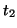

Next: Force Field Box
Up: Virtual AFM Box
Previous: Stabil_Time1
Contents
Duration time (in s) of the second stabilisation period,

,
when excitation is on, but the tip is still far away from the surface.
Parameters:
Default: 15.0d-3
Example: Stabil_Time2
15.0d-3
Lev Kantorovich
2005-08-04